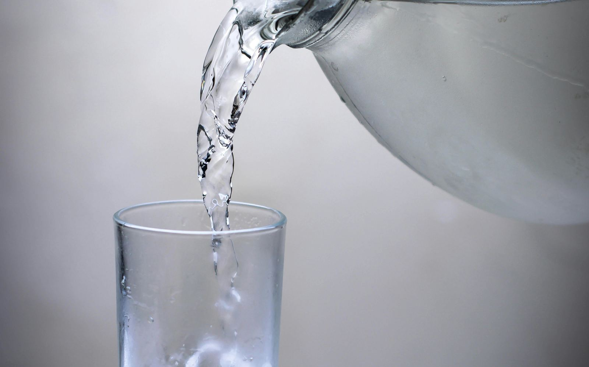
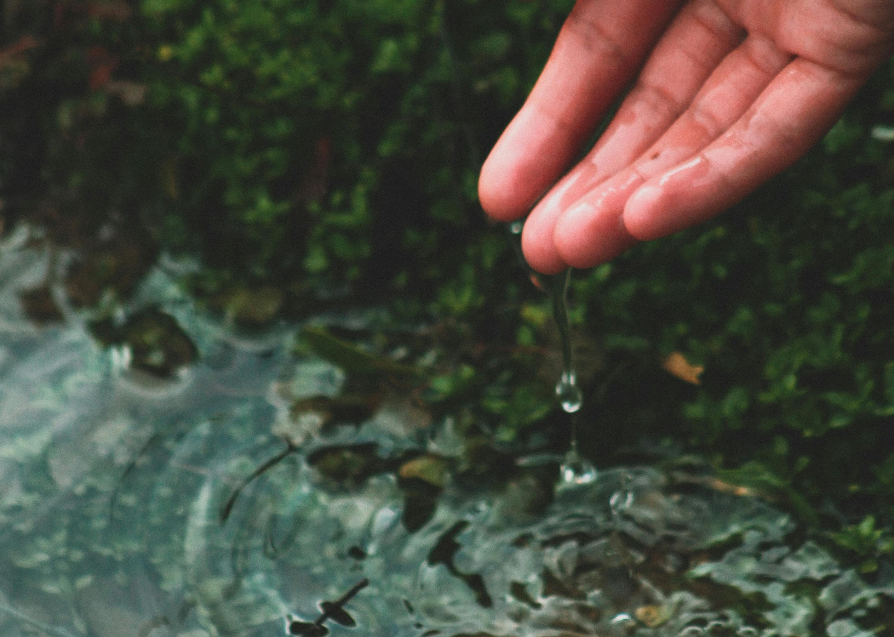

There's something almost too simple about water. In a world full of supplements, detox teas, and elaborate wellness rituals, the humble glass of water doesn't get much attention. It doesn't come in a pretty bottle. It doesn't promise transformation. It just sits there, quietly, on your nightstand.
And yet, research keeps returning to the same gentle conclusion: how and when you drink water may be one of the most powerful, effortless shifts you can make for your body. Not a diet. Not a restriction. Just water — at the right moment.

Drink Before You Eat — and Watch What Happens
Research has shown that drinking a full glass of water about thirty minutes before each meal can meaningfully reduce how much you eat — automatically, without willpower or counting anything. Your stomach signals fullness to your brain, and when it's already partially occupied with water, the threshold for "enough" arrives a little sooner.
Over time, this gentle, consistent habit can contribute to real weight loss, especially when paired with nourishing food choices. No dramatic overhaul required. Just a glass of water, a half hour earlier than you thought to drink it.
What if you don't need to eat less — you just need to drink more, first?
What if what you're craving isn't food — it's simply water your body has been quietly asking for all along?
The Cold Water Effect
Your body works constantly to maintain a steady internal temperature. When you drink cold water, it has to expend energy to bring that water up to body temperature — and research suggests this thermal effect can increase your daily energy expenditure by around 96 calories. Studies have found that drinking 2 liters of water per day produced this effect consistently.
96 calories might sound modest on its own. But accumulated over weeks and months of quiet, consistent cold water drinking, it adds up — effortlessly, in the background of your life, requiring nothing from you except the habit of reaching for the glass.
What Your Body Is Really Asking For
One of the most overlooked facts about hunger: we're not always as hungry as we think. The signals for thirst and mild hunger can feel remarkably similar, and many of us are gently, chronically under-hydrated without ever realizing it.
Before reaching for a snack, try this first — drink a glass of water and wait ten minutes. You might be surprised how often the craving softens, or fades entirely. This isn't about deprivation. It's about learning to listen more closely to what your body is actually saying — which is often simply: please, just water.

Hydration is one of the few wellness practices that asks almost nothing of you — and gives back quietly, daily.
The Quiet Health Benefits No One Talks About
Weight and metabolism get all the headlines, but consistent hydration quietly supports your body in ways that deserve far more attention. Here are four areas where adequate water intake makes a real, documented difference:
- Digestion & Constipation Water keeps digestion moving. Dehydration is one of the most common — and most overlooked — causes of chronic constipation, and often the simplest solution. When your body has enough water, the whole digestive process flows the way it was designed to.
- Kidney Stones Drinking enough water dilutes the minerals in your urine that form stones. Hydration is considered the single most important preventive measure for kidney stones — far simpler and gentler than treating them after the fact.
- Bladder & Colorectal Health Studies have suggested links between adequate hydration and reduced risk of bladder and colorectal cancers. Water helps flush the urinary tract and supports healthy bowel function — two systems that respond profoundly to how well you take care of them each day.
- Skin, Glow & Acne Skin is an organ — and like every organ, it needs water to function well. Hydration supports elasticity, can reduce the appearance of fine lines, and plays a meaningful role in clearing skin from the inside out. The clearest complexion might not come from a serum. It might come from the glass beside your bed.

Small drops, consistently given. That's how the body heals — and how habits take root.
Your Daily Water Schedule
Eight glasses a day is the gentle standard — but when you drink them matters just as much as how many. Here's a rhythm to follow, from morning to evening, that works with your body's natural flow rather than against it.
2 glasses — Wake your body, gently
Drinking water first thing in the morning, on an empty stomach, is one of the kindest things you can do for your body. It supports a healthy level of hydration right from the start, signals to your system that the day has begun, and prepares your digestive tract for breakfast. Speaking of which — don't skip it. A nourishing morning meal is what gives you the energy and vitality to actually show up for your day.
1 glass — Before the afternoon hunger sets in
As your stomach starts to growl in the late morning, a glass of water can gently curb that early appetite and support digestion as your body prepares for lunch. One note: try not to drink too close to a meal. Water consumed immediately before or after eating can dilute digestive juices — aim for about 30 minutes before, and give your body at least an hour after eating to absorb nutrients fully.
2 glasses — The post-lunch ritual
About an hour after lunch, reach for one or two glasses of water — still or sparkling. Sparkling water, rich in sodium bicarbonate, is often thought to support digestion, and there's something genuinely satisfying about it as an afternoon treat. Allow yourself that quiet pleasure. Give your body time to absorb everything you've eaten, and let the water do its gentle, supportive work.
2 glasses — The long stretch between meals
Six or seven hours pass between lunch and dinner, and your body will ask for water during that time. Listen to it. Water hydrates without calories, without any fuss. This is also your reminder: if you exercise at any point in your day, drink water before and after. Movement asks a great deal of your body — water helps it flush out what it no longer needs, and recover more gracefully.
1 glass — The eighth and final, warm and slow
This is the one you get to savour. Reach your eighth glass with something a little more intentional — warm water with a thin slice of lemon, about 30 minutes after dinner. Warm liquid keeps you hydrated through the night, can soothe the stomach, and may ease any cramping or discomfort. It's also a beautiful signal to your body that the day is winding down. You've done enough. You've taken care of yourself. Rest well.
How to Know If You're Drinking Enough
The most honest, immediate way to check your hydration isn't an app or a formula — it's something much simpler. Look at the color of your urine. Pale, straw-yellow means you're well-hydrated. Dark yellow or amber is your body asking, quietly, for more.
Your thirst mechanism is also more sophisticated than most people give it credit for. If you feel thirsty, you're already mildly dehydrated — so try to stay a little ahead of it, sipping steadily throughout the day rather than drinking large amounts all at once.
As a gentle starting point, most women do well with around 2 liters — roughly eight cups — per day. But your actual needs depend on your body, your activity level, and the climate you live in. Let your body guide you. Let your urine color be your honest, daily feedback. Keep a water bottle somewhere you'll see it. That's all it takes to begin.
Begin with the simplest thing.
Water is so ordinary that it's easy to overlook. But the quietest rituals are often the most powerful. A glass before each meal. Cold water in the morning. Sipping steadily instead of rushing. These small, gentle acts of care accumulate — in your metabolism, your skin, your digestion, your energy. What if taking care of your body didn't require a complicated plan — just a little more water, at the right time?